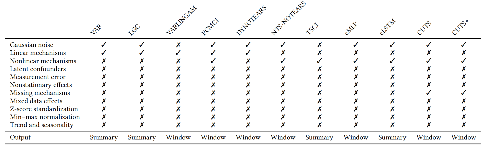
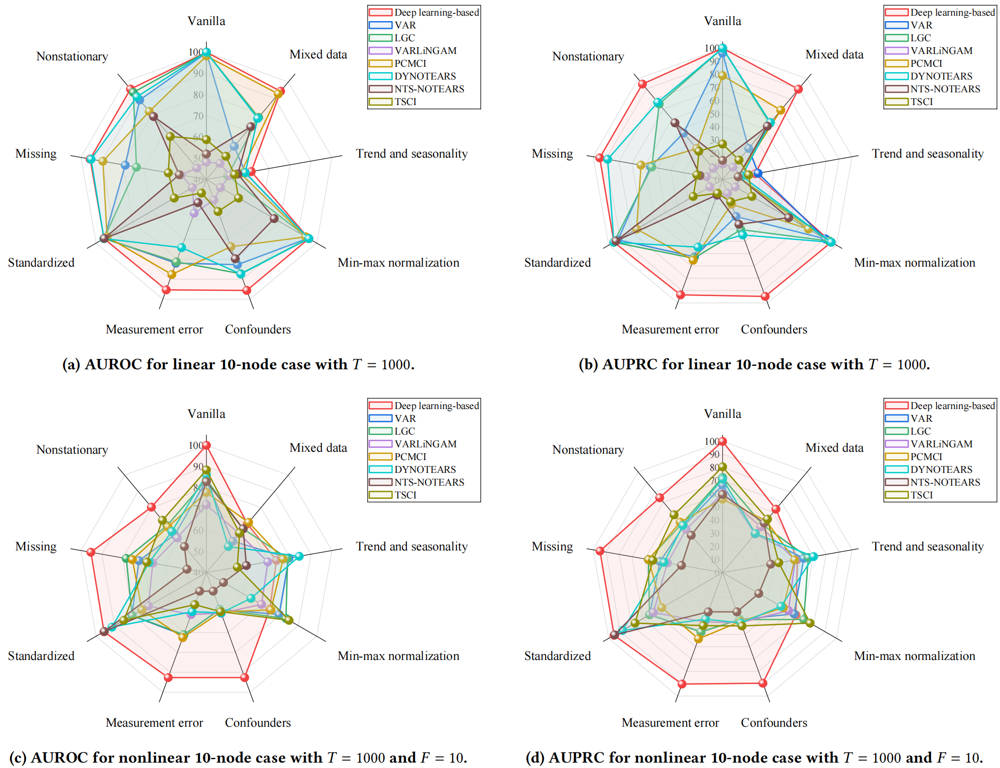
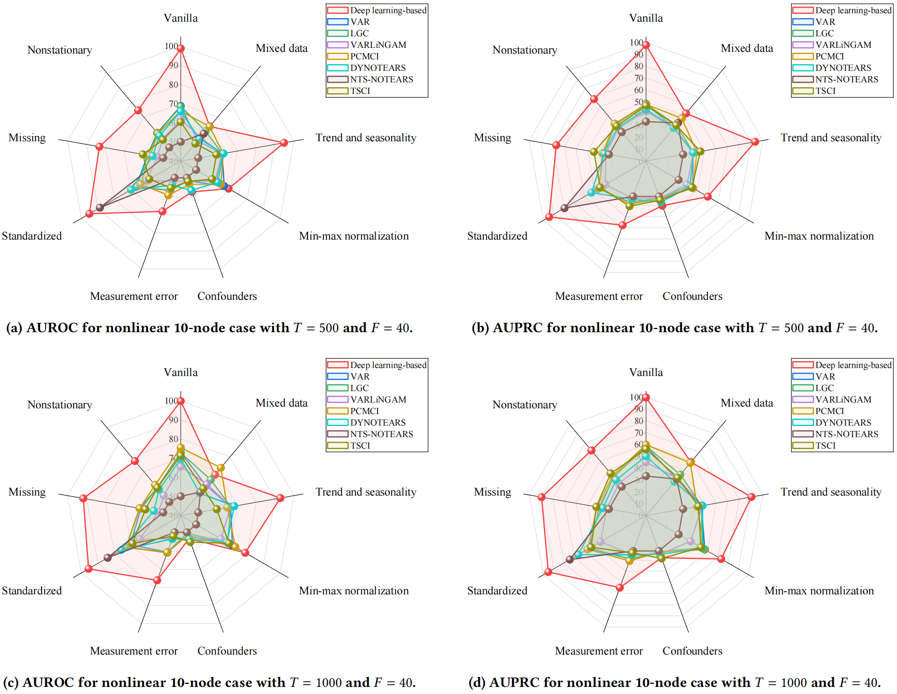
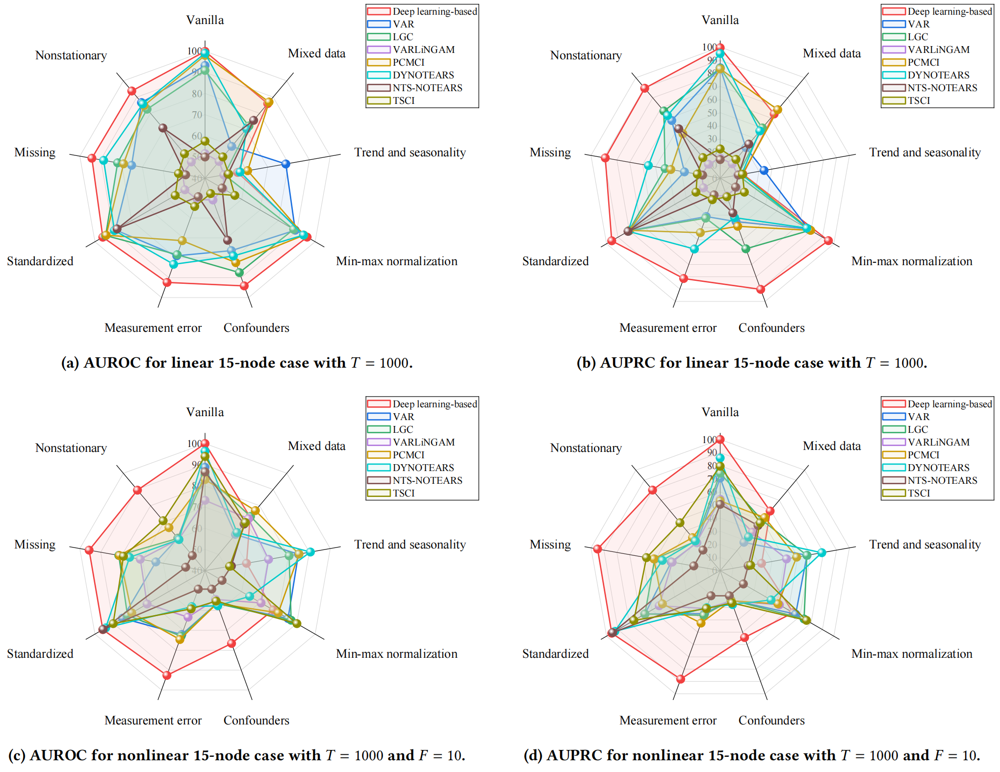
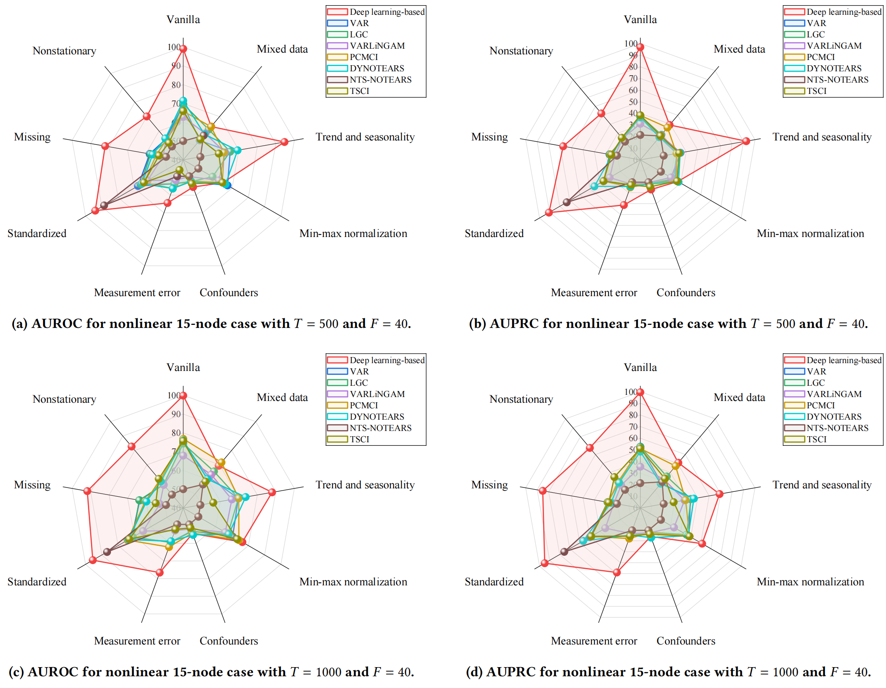
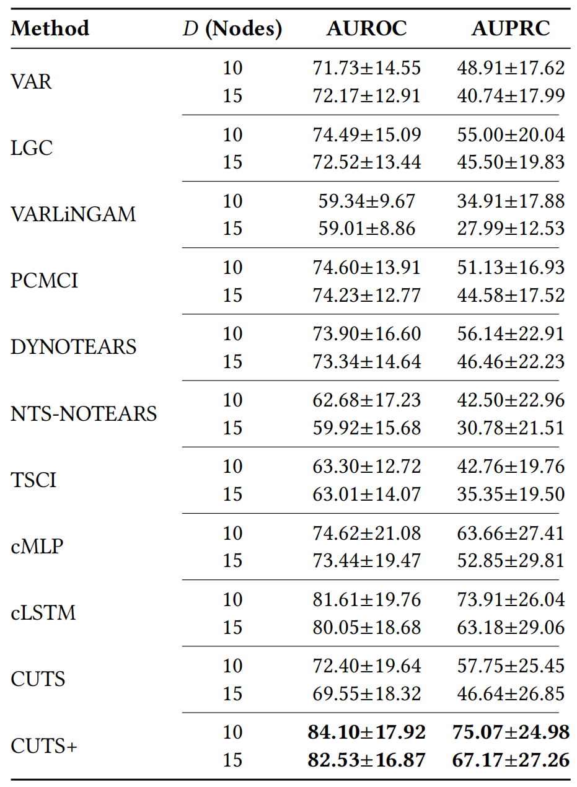

Causal discovery from time series is a fundamental task in machine learning. However, its widespread adoption is hindered by a reliance on untestable causal assumptions and by the lack of robustness-oriented evaluation in existing benchmarks. To address these challenges, we propose CausalCompass, a flexible and extensible benchmark suite designed to assess the robustness of time-series causal discovery methods under violations of modeling assumptions. Our experimental results indicate that no single method consistently attains optimal performance across all settings; methods with superior overall performance are almost invariably deep learning-based. We also provide hyperparameter sensitivity analyses and highlight the strong dependence of NTS-NOTEARS on standardized preprocessing.
Table 1: Summary of the assumptions associated with each algorithm and the types of causal graphs they are designed to recover.


Figure 1: Linear and nonlinear settings across vanilla and eight assumption-violation scenarios (10 nodes, T = 1000).

Figure 3: Nonlinear settings across vanilla and eight assumption-violation scenarios (10 nodes, F = 40).

Figure 5: Linear and nonlinear settings across vanilla and eight assumption-violation scenarios (15 nodes, T = 1000).

Figure 6: Nonlinear settings across vanilla and eight assumption-violation scenarios (15 nodes, F = 40).
Table 3: Summary of methods' performances across all scenarios and configurations.

@misc{yi2026causalcompass,
title = {{CausalCompass}: Evaluating the Robustness of Time-Series Causal Discovery in Misspecified Scenarios},
author = {Yi, Huiyang and Shen, Xiaojian and Wu, Yonggang and Chen, Duxin and Wang, He and Yu, Wenwu},
year = {2026},
note = {Under review as a conference paper}
}